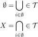

trivial sets in a topology
 eine
eine 2. Beweis
Nach Konvention und der Abgeschlossenheit gegenüber Schnitten (Topologie) und Abgeschlossenheit gegenüber Vereinigung (Topologie) gilt:

2
Alternativ fordert man das als Axiom
Nach Konvention und der Abgeschlossenheit gegenüber Schnitten (Topologie) und Abgeschlossenheit gegenüber Vereinigung (Topologie) gilt:
Alternativ fordert man das als Axiom